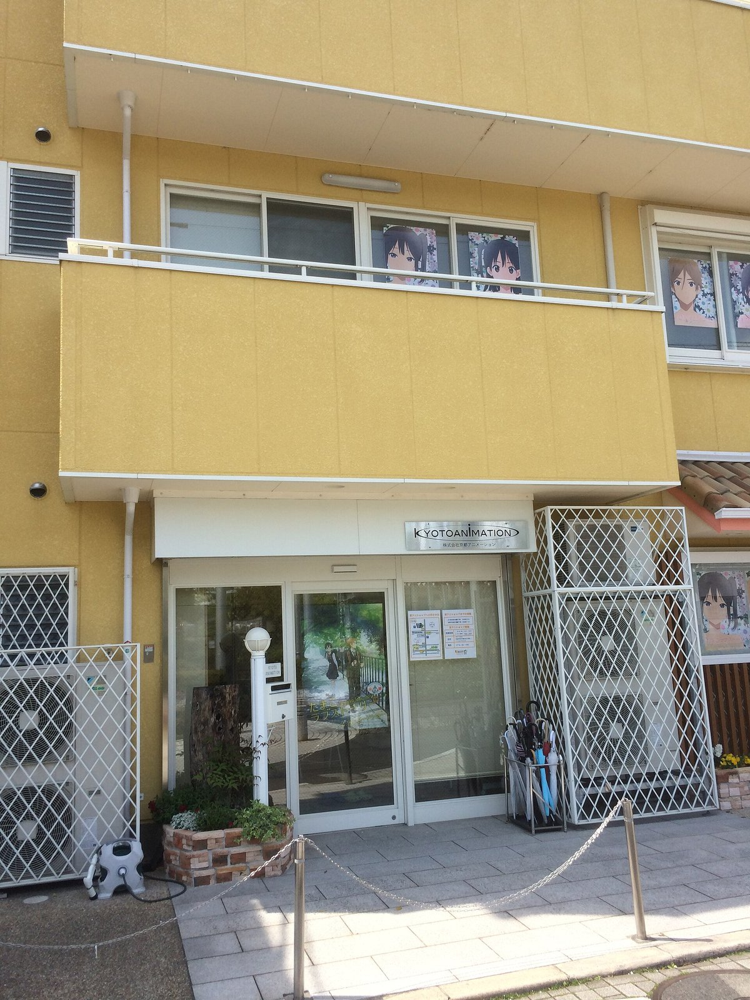

公司介绍
京都动画株式会社（京都アニメーション）总部位于京都府宇治市，通称“京阿尼”。 它从一个只做上色的小工作室起步，用四十年时间成为日本动画里最容易被认出的名字之一。
一间不肯外包的京都公司
1981 年，八田阳子与一群住在京都的主妇开始承接电视动画的上色工作，这是京阿尼的前身。 1985 年 7 月 12 日公司正式法人化，丈夫八田英明出任社长。此后很长一段时间， 京阿尼以“协力制作”的身份参与别家的动画，把作画、上色、美术、摄影一道道工序慢慢收进自己的工作室。
2003 年，它第一次以“元请”（总承包）身份独立制作电视动画《全金属狂潮？Fumoffu》； 2005 年改编 Key 的《AIR》，2006 年推出《凉宫春日的忧郁》，从此进入日本动画的中心。 与多数工作室不同，京阿尼的作画、上色与美术大多由社内正式员工完成，员工领月薪而不是按张计酬， 公司还设有宿舍与培训制度。这套“慢而稳”的做法，直接决定了它画面的统一与细腻。

- 正式名称
- 京都アニメーション株式会社（Kyoto Animation Co., Ltd.）
- 通称
- 京アニ / 京阿尼 / KyoAni
- 前身
- 京都动画工作室，1981 年成立，以动画上色工作起步
- 创建日期
- 1985 年 7 月 12 日（法人设立，最初为有限公司；1999 年改组为股份有限公司）
- 本社地址
- 京都府宇治市木幡大瀬戸 32
- 创始人
- 八田阳子（八田陽子）
- 代表
- 八田英明（代表取缔役社长）
- 主要业务
- 电视动画、剧场动画、OVA 的制作；周边企划与出版（KA Esuma 文库）
- 制作据点
- 本社与第 1、第 2、第 5 工作室等，另设东京办公室
- 用人方式
- 以正式社员为主体，社内培养、月薪制，这在日本动画行业里并不常见
发展历程
Timeline从一间上色工作室开始
八田阳子与一批主妇在京都承接动画的上色（仕上げ）工作，“京都动画工作室”成立。没有名气，只有稳定的手艺。
7 月 12 日，公司法人化
京都动画正式设立，八田英明出任社长。公司从承接工序，转向建立自己的制作体系。
把工序一道道收回社内
以作画、上色协力的身份参与多家公司的电视动画，同时逐步把摄影、美术、背景等环节纳入自己的工作室，为日后的“内制”打底。
大阪子公司 Animation Do
设立 Animation Do，承接部分制作工序，分担本社的产能。2020 年 11 月，该公司被吸收合并。
第一部元请电视动画
《全金属狂潮？Fumoffu》由京阿尼独立元请制作。此前它已在《全金属狂潮！》中担任协力。
《AIR》，与 Key 的第一次
把 Key 的恋爱冒险游戏改编成电视动画，确立“京都式”校园叙事：缓慢的日常、克制的情绪、干净的光。
《凉宫春日的忧郁》与“凉宫现象”
播出后引爆网络讨论，ED 舞被大量翻跳，轻小说改编成为产业主流。京阿尼第一次站到日本动画的中心。
《轻音少女》，与京都动画大奖
《轻音少女》带起圣地巡礼与角色歌热潮；同年公司创设“京都动画大奖”，并设立 KA Esuma 文库，向公众征集小说、剧本与插画。
《冰菓》与《中二病也要谈恋爱！》
一边是安静的日常推理，一边是张扬的中二病妄想，“京都式青春”同时长出两种面貌。
《吹响！上低音号》
以高中吹奏乐部为舞台，把社团群像、练习的枯燥与演奏的爆发做到极致，成为京阿尼“群像剧”的新高峰。
《声之形》
剧场版上映，日本票房约 23 亿日元。校园欺凌与听障少女的故事，让京阿尼走进更广泛的观众群。
《紫罗兰永恒花园》
京都动画大奖首个“大赏”作品动画化，并由 Netflix 面向全球配信；同年《莉兹与青鸟》上映。
7 月 18 日，第 1 工作室遭纵火
36 人遇难，33 人受伤。这是日本动画史上最沉重的一天，详见第五章。
重新出发
《紫罗兰永恒花园 剧场版》于 9 月上映；同年，公司因在动画行业性别平等方面的工作，获 Women in Animation 的 Diversity Award。
继续画下去
《吹响！上低音号 3》（2024）、《CITY THE ANIMATION》（2025）等新作陆续播出，工作室仍在运转。
主要成就与荣誉
Achievements《凉宫春日的忧郁》与“凉宫现象”
作品播出后在日本网络与校园里形成持续数年的讨论热潮，片尾曲的舞蹈被各国粉丝翻跳、翻拍。 它让“轻小说改编”成为电视动画的主要路线之一，也让京阿尼的社团日常成为同人创作的富矿。
《轻音少女》与圣地巡礼
五位少女在放学后玩乐队的故事，带动了角色歌、乐器与周边销量；取景地滋贺县丰乡小学校旧校舍 成为粉丝长期造访的“圣地”，被视为日本“圣地巡礼”经济的典型案例之一。
创设京都动画大奖
公司设立面向公众的小说、剧本与插画奖项，并与自有的 KA Esuma 文库联动出版。 《紫罗兰永恒花园》正是该奖第一个“大赏”作品——它让普通投稿者有机会成为动画的原作者。
《声之形》的奖项与票房
获第 40 回日本电影学院奖优秀动画作品奖、第 26 回日本电影批评家大赏动画部门作品奖、 第 20 回文化厅媒体艺术祭动画部门优秀奖，以及 2017 年东京动画奖年度动画；日本票房约 23 亿日元。
《紫罗兰永恒花园》走向世界
电视动画由 Netflix 面向全球配信，2020 年剧场版上映。京阿尼的“京都味”由此被更多海外观众认识。
Women in Animation · Diversity Award
因在动画行业推动性别平衡与人才培养方面的努力，公司获得该奖项。这与它长期坚持的社内育成、正社员制度一脉相承。
三个关键词
Why KyoAni内制
作画、上色、美术、摄影大多在社内完成，外包比例很低。工序握在自己手里，画面才不会在流转中散掉， 这是京阿尼镜头统一、细节耐看的根本原因。
育人
以正式社员为主体，公司设有宿舍与培训机制，让新人从“中割”一路成长为原画、作画监督。 稳定的团队，才有稳定的“京都味”。
取景
京都、宇治的河堤、商店街、学校与山，被反复画进作品。光穿过树叶的角度、雨后水面的反光， 都不是装饰，而是叙事的一部分。